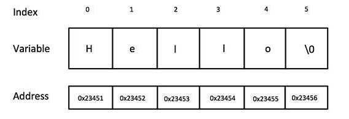

C-Style Character String
The C-style character string (character array) originated within the C language and continues to be supported within C++. This string is actually a one-dimensional array of characters which is terminated by a null character '\0'. Thus a null-terminated string contains the characters that comprise the string followed by a null.
The following declaration and initialization create a string consisting of the word "Hello". To hold the null character at the end of the array, the size of the character array containing the string is one more than the number of characters in the word "Hello."
char greeting[6] = {'H' , 'e' , 'l' , 'l' , 'o' , '\0' };
Following the rule of array initialization, then the above statements can also be written as follows:
char greeting[] = "Hello" ;
Memory presentation of the above defined string in C/C++
Note: Actually, you do not place the null character at the end of a string constant. The C++ compiler automatically places the '\0' at the end of the string when it initializes the array.
Exmaple
#include <iostream>
using namespace std;
int main ()
{
char greeting[6] = {'H' , 'e' , 'l' , 'l' , 'o' };
cout << "Greeting message: " << greeting << endl ;
return 0 ;
}
Output
Greeting message: Hello
C++ String Class
The standard C++ library provides a string class type that supports all the operations mentioned above, additionally much more functionality.
Strings are objects that represent sequences of characters.
Exmaple
#include <iostream>
#include <string>
using namespace std;
int main ()
{
string greeting_str = "Hello";
cout << "Greeting message: " << greeting_str << endl ;
return 0 ;
}
Output
Greeting message: Hello